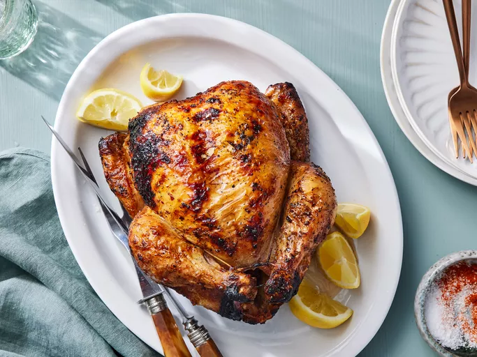

Rotisserie Chicken
Ref.

Description
This rotisserie chicken recipe is so easy to make with simple seasonings on your grill. Occasional basting with a butter mixture ensures crispy skin and moist meat. Our family loves this! Rotisserie chicken is perfect as the main dish with French fries and coleslaw, or with any number of other sides.
Ingredients
- 1 whole chicken
- 1 pinch slat
- 1/4 cup butter, melted
- 1 tablespoon salt
- 1 tablespoon ground paprika
- 1/4 tabletpoon ground black pepper
Steps
- Gather all ingredients. Preheat an outdoor grill for high heat and lightly oil the grate.
- Season chicken cavity with a pinch of salt. Tie legs together with kitchen string; then tie wings to the bird. Secure chicken on a rotisserie attachment.
- Place rotisserie over the preheated grill and cook for 10 minutes.
- Meanwhile, quickly mix together butter, 1 tablespoon of salt, paprika, and pepper. Turn the grill down to medium and baste chicken with butter mixture.
- Close the lid and cook over medium heat, basting occasionally, until chicken is cooked through and the internal temperature reaches 180 degrees F (83 degrees C), 1 to 1 1/2 hours.
- Remove chicken from the rotisserie and let rest for 10 to 15 minutes before carving.
Back to All Recipes